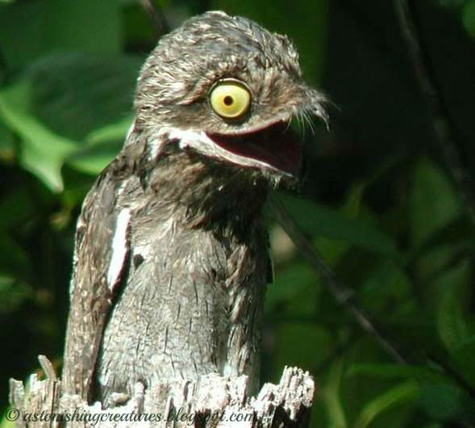

Back
Potoo

Their feather patterns are gray, black,brown, meant to
resemble tree bark.
The nesting period for the potoo eggs are 40-45 days.
They have large mouths so it would be quick and easy to
catch their pray.